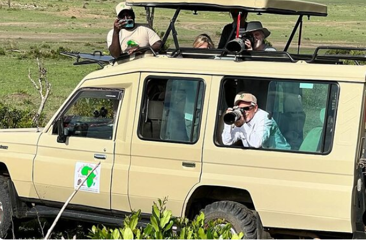
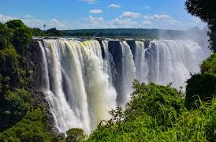

Tourists Experience
Experience world-class hospitality as our hotel welcomes tourists from across the globe,
creating a vibrant and unforgettable atmosphere. Whether you are a solo traveler, a couple, or a group of friends,
we offer guided tours to breathtaking attractions, ensuring you immerse yourself in the local culture.
Capture picture-perfect moments as you explore historic sites, lively markets,
and hidden gems waiting to be discovered.
Meet fellow adventurers and exchange stories over exquisite dining experiences and exciting entertainment options.
Whether your goal is relaxation or exploration, our hotel is the perfect gateway to your dream destination

Natural Adventures (Waterfalls & Beyond)
Immerse yourself in the beauty of nature as you visit breathtaking waterfalls,
where the roaring waters create a mesmerizing and tranquil atmosphere.
Take a scenic hike through lush landscapes, leading to cascading falls that offer spectacular panoramic views.
Capture the magic of these natural wonders as misty sprays refresh your senses and vibrant greenery surrounds you.
Experience the soothing sound of rushing waters, a perfect escape from the hustle and bustle of everyday life.
Whether you prefer a gentle trek or a thrilling climb,
our waterfall adventures promise an unforgettable connection with nature.
Wildlife Adventures
Embark on a thrilling wildlife adventure where you can witness majestic animals roaming freely in their natural habitats.
Join guided safaris and capture breathtaking views of elephants,
lions, zebras, and many other fascinating creatures.
Our expert tour guides ensure you get up-close and personal
with diverse wildlife while sharing insightful knowledge about their behaviors and ecosystems.
Explore conservation parks dedicated to protecting endangered species and learn
about ongoing efforts in wildlife preservation.
Whether it’s an early morning game drive or an exciting night safari,
every wildlife encounter promises to be an unforgettable experience.